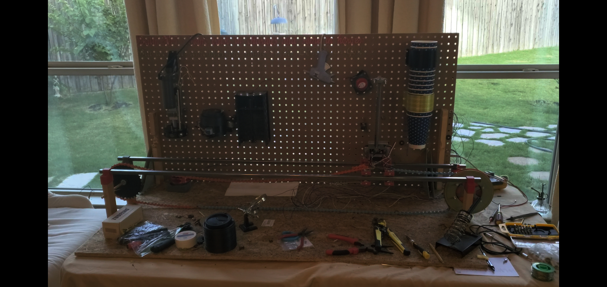
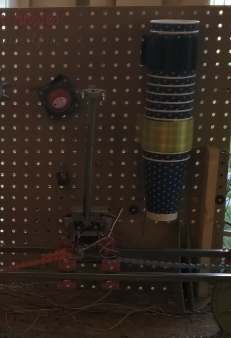

Carousel Coffee LLC
Founder & Managing Member · The Colony, TX · January 2026 – Present


Overview
Carousel Coffee LLC grew out of a multi-year robotics project. I founded the company to take a customized coffee robot from concept toward a customer-facing, app-driven experience— including automated preparation in a drive-thru style flow.
Robotics
The machine is designed to prepare drinks such as lattes, Americanos, and mochas: combining espresso and milk, applying syrups or sweeteners when requested, and sealing the cup with a lid. The first functional prototype can assemble beverages such as chocolate milk, validating the mechanical sequence before full coffee production hardware is finished.
Software
The Flutter app is largely complete for core customer flows: sign-in, drink customization, ordering, Apple Pay, and scheduling. Remaining work centers on integrating the app with the final robotic system for a reliable, end-to-end customer experience.
Status
Prototype hardware and app foundations are in place. Current focus is scaling toward a production-ready build. I will update this page as new photos and milestones land.